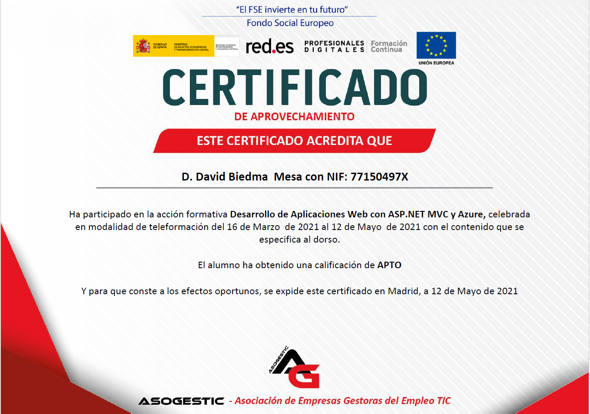
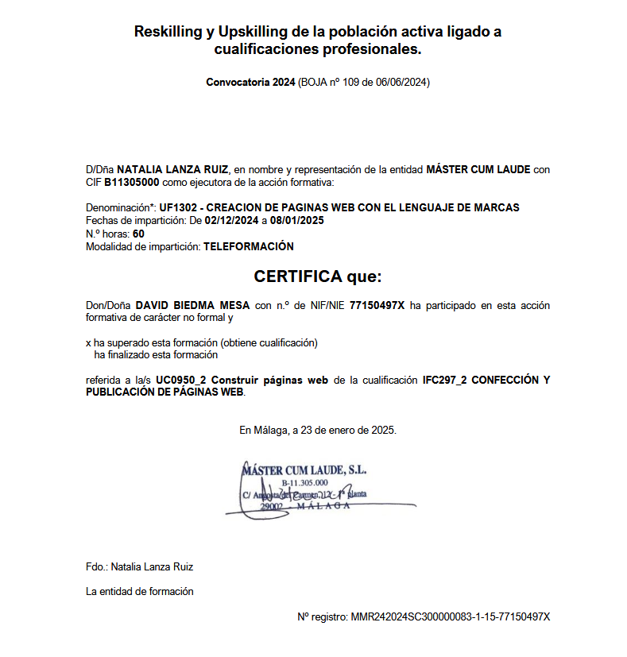
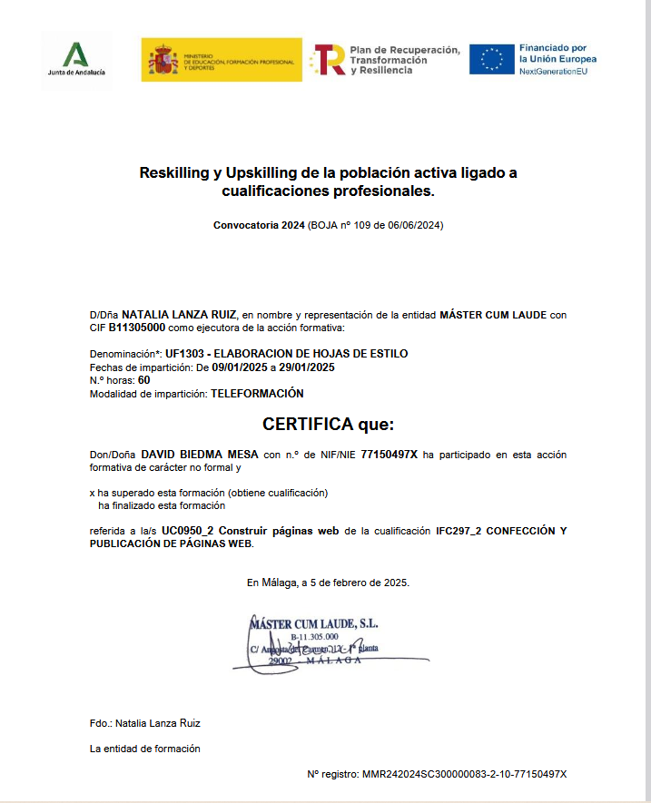
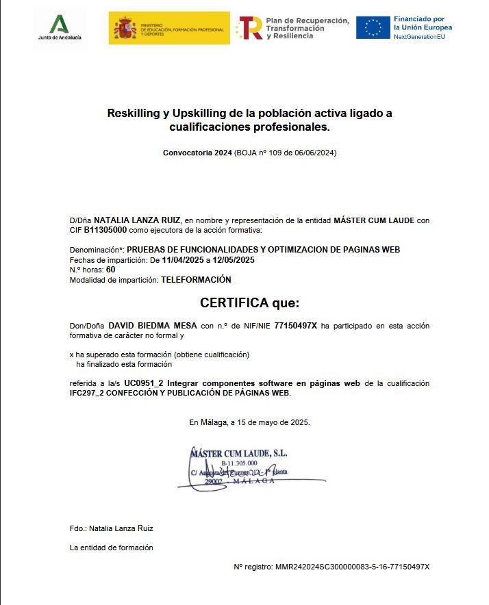
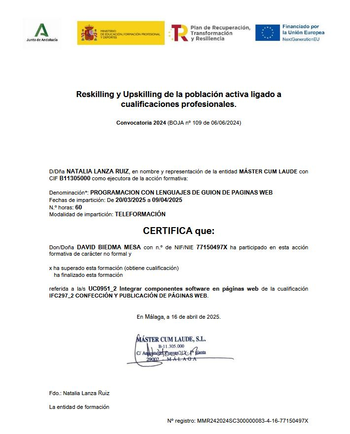
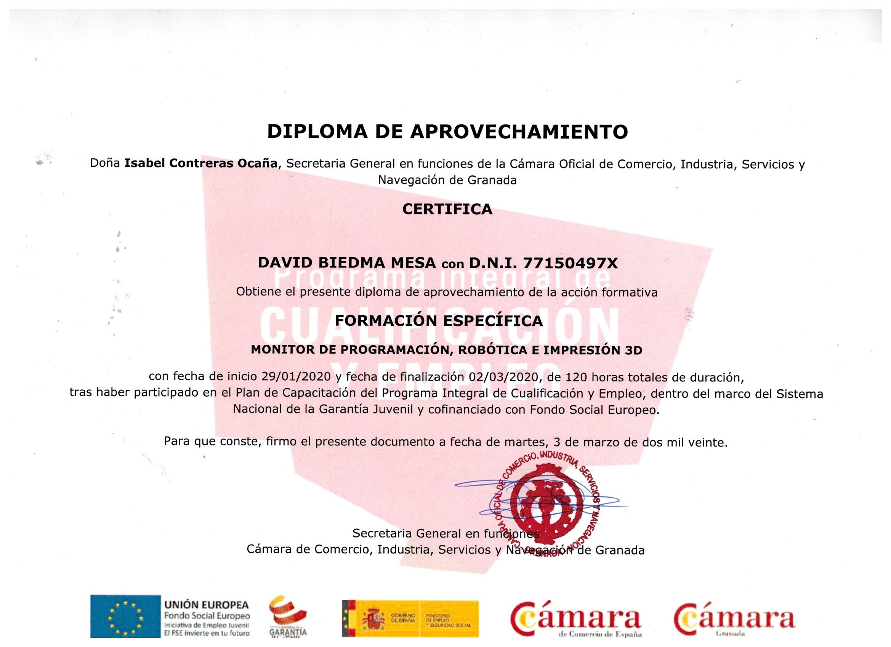
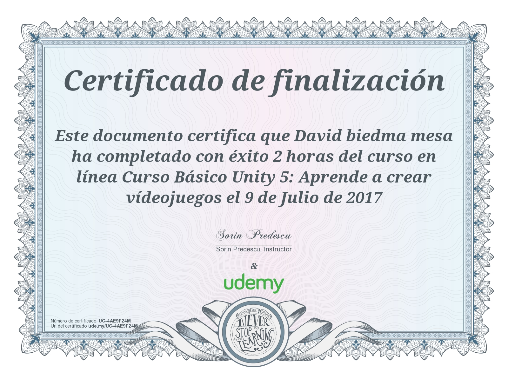

Este soy yo
¡Hola! Soy David Biedma Mesa,
un apasionado estudiante de Desarrollo de Aplicaciones Web (DAW),
con un gran interés por aprender y dominar nuevas tecnologías.
Me encanta enfrentarme a desafíos técnicos
y encontrar soluciones creativas y eficientes.
Aunque aún estoy en formación,
mi curiosidad y proactividad
me impulsan a seguir creciendo como desarrollador.


PROYECTOS
Experencia
- COVIRAN-->2015
- Mr Basray world cuisine -->2017
- CIDAF-->2019
- AMC-->2021
Certificaciones
Curso de desarrollo web con ASP.net y Azure

- Fundamentos de Programación Web
- HTML5, CSS3 y JavaScript
- jQuery
- Desarrollo Web con MVC
- Creación de una aplicación Web
- Programación de una aplicación Web
- Acceso y visualización de datos
- ASP.Net y AJAX
- ASP.Net Framework MVC
- Desarrollo con Microsoft Azure y Web Services
- Consultar y manipular datos utilizando Entity Framework
- Crear y consumir Servicios de la API Web ASP.NET
- Hospedar Servicios
- Publicar Servicios
- Almacenamiento Windows Azure
Confeccion de paginas web (60h)

- UD 1: Lenguajes de marcas
- Características y estructura de documentos
- Formatos, enlaces y navegación
- Marcos y capas
- UD 2: Imágenes y multimedia
- Formatos y atributos de imágenes
- Mapas de imágenes
- Audio, vídeo y marquesinas
- UD 3: Accesibilidad y usabilidad
- Accesibilidad web y sus ventajas
- Importancia de la usabilidad
- Herramientas para verificar accesibilidad
- Diseño y adaptación de sitios usables
- UD 4: Edición web
- Instalación y configuración de herramientas
- Funciones y características principales
Elaboración de hojas de estilo (60h)

- UD 1: Hojas de estilo en páginas web
- Funciones y características
- Tipos de estilos: incrustados, enlazados, importados
- Selectores y reglas de estilo
- Estilos para fuentes, color, fondo y texto
- Creación de ficheros de estilo
- UD 2: Diseño y optimización de contenidos
- Creación de documentos funcionales
- Diseño y ubicación de contenidos
- Tipos de página y sus especificaciones
- Elementos y estructura de navegación
- Creación de mapas de navegación
- Elaboración de una guía de usuario
PRUEBAS DE FUNCIONALIDADES Y OPTIMIZACION DE PAGINAS WEB(60h)

- UD 1: Validaciones de datos en páginas web
- Funciones de validación.
- Verificar formularios
- UD 2: Efectos especiales en páginas web.
- Trabajar con imágenes: imágenes de sustitución e imágenes múltiples
- Trabajar con textos: efectos estéticos y de movimiento
- Trabajar con marcos.
- Trabajar con ventanas.
- UD 3: Pruebas y verificación en páginas web.
- Técnicas de verificación.
- Herramientas de depuración para distintos navegadores.
- Verificación de la compatibilidad de scripts.
PROGRAMACION CON LENGUAJES DE GUION DE PAGINAS WEB (60h)

- UD 1: Validaciones de datos en páginas web
- UD2. Lenguaje de guión.
- UD3. Elementos básicos del lenguaje de guión.
- UD4. Desarrollo de scripts
- UD5. Gestión de objetos del lenguaje de guión.
- UD6. Los eventos del lenguaje de guión.
- UD7. Búsqueda y análisis de scripts
Curso de programación,robotica y 3D

- Monitor de Programación, Robótica e Impresión 3D
- Fundamentos de programación en entornos educativos
- Diseño y desarrollo de proyectos de robótica
- Uso de herramientas y kits de robótica educativa
- Modelado y fabricación con impresión 3D
- Aplicación de nuevas tecnologías en educación
- Integración de programación y hardware
Curso Básico unity 5

- Introducción a Unity 5: Configuración del proyecto y entorno
- Fundamentos de C#: Movimiento de personajes e interacción
- Físicas y animaciones: RigidBody y Animator
- Interfaz de usuario (UI): Menús, botones y contadores
- Exportación y prueba: Creación de una versión jugable
Mas sobre mi
Por otro lado soy una persona a la que siempre le han gustado el mundo de las tecnologías, gracias principalmente a los videojuegos, eso me impulsó a dar mis primeros pasos en la programación estudiando un curso de C# en unity y a continuar formandome en diferentes lenguajes de programacion, hasta ahora que estoy terminando de cursar la FP superior de desarrollo web.
No considero pues el haber perdido el tiempo estudiando biología, es más pienso que me ha ofrecido muchas cualidades y conocimientos que son universales en cualquier ambito como pueden ser El pensamiento crítico y analitico, método cientifico y experimental y una gran adaptabilidad entre otras. Me gustaria dedicarme por completo al desarrollo web y a la creacion de paginas web responsivas y dinamicas.
contactame

644950494

davidbiedmamesa@gmail.com